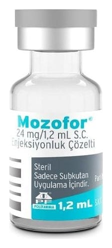

Mozofor 24 mg/1,2 mL S.C. Enjeksiyonluk Çözelti, 1 ADET

Ne için kullanılır
KT · Bölüm 1MOZOFOR’un her bir flakonu, 1,2 mL çözelti içinde 24 mg pleriksafor içermektedir. Enjeksiyonluk çözeltinin her mL’si 20 mg pleriksafor içermektedir. MOZOFOR, bromobütil likit tıpalı cam bir flakon içinde, berrak, renksiz ila açık sarı arası renkte, enjeksiyonluk çözelti olarak tedarik edilmektedir. Her bir kutuda 1 adet flakon bulunmaktadır.
MOZOFOR, kan kök hücrelerinin yüzeyindeki bir proteini bloke eden, pleriksafor adı verilen bir etkin madde içermektedir. Bu protein, kan kök hücrelerini kemik iliğine "bağlar." Pleriksafor, kök hücrelerin kan akışına salıverilmesini artırır (mobilizasyon). Daha sonra, kök hücreler kan bileşenlerini birbirinden ayıran bir makine (aferez makinesi) yoluyla toplanıp, nakile kadar dondurularak saklanabilir. Bu ilacı kullanmaya başlamadan önce bu KULLANMA TALİMATINI dikkatlice okuyunuz, çünkü sizin için önemli bilgiler içermektedir.
• Bu kullanma talimatını saklayınız. Daha sonra tekrar okumaya ihtiyaç duyabilirsiniz. • Eğer ilave sorularınız olursa, lütfen doktorunuza veya eczacınıza danışınız. • Bu ilaç kişisel olarak sizin için reçete edilmiştir, başkalarına vermeyiniz. • Bu ilacın kullanımı sırasında, doktora veya hastaneye gittiğinizde doktorunuza bu ilacı kullandığınızı söyleyiniz. • Bu talimatta yazılanlara aynen uyunuz. İlaç hakkında size önerilen dozun dışında yüksek veya düşük doz kullanmayınız.
MOZOFOR lenfoma (bir akyuvar kanseri) veya multipl miyelom (kemik iliğindeki plazma hücrelerini etkileyen bir kanser) yetişkin hastalarda yeterli kan kök hücresinin toplanması için • En az bir kez granülosit (vücuttaki beyaz kan hücrelerini oluşturan hücre tiplerinden biri) koloni uyarıcı faktör (G-CSF) ve sonrasında en az bir kez granülosit koloni uyarıcı faktör (G- CSF) ve kemoterapi uygulanmasına rağmen yeterli kök hücrenin kan akışına salıverilmesi sağlanamaması durumunda, • Sadece granülosit koloni uyarıcı faktör (G-CSF) ile yeterli kök hücrenin kan akışına salıverilmesinin sağlanamayacağı öngörülen durumlarda en az bir kez granülosit koloni uyarıcı faktör (G-CSF) ve kemoterapi uygulanmasına rağmen yeterli kök hücrenin kan akışına salıverilmesi sağlanamaması durumunda granülosit koloni uyarıcı faktör (G-CSF) birlikte kullanılmaktadır.